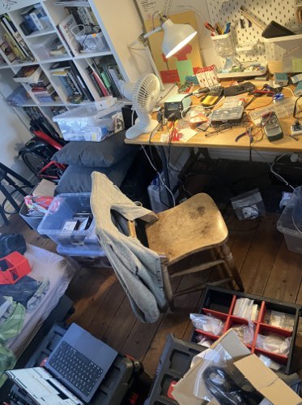

resisting big tech through making

Atoms are messy!
The image of the tidy maker space feels a myth. The perfectly organised workshop is a mile away from the middle of a project.
Following an idea from code to a physical object is like pulling on multiple threads - unravelling the idea and shaping it into something.
Here i want to pull at these threads and show my working…